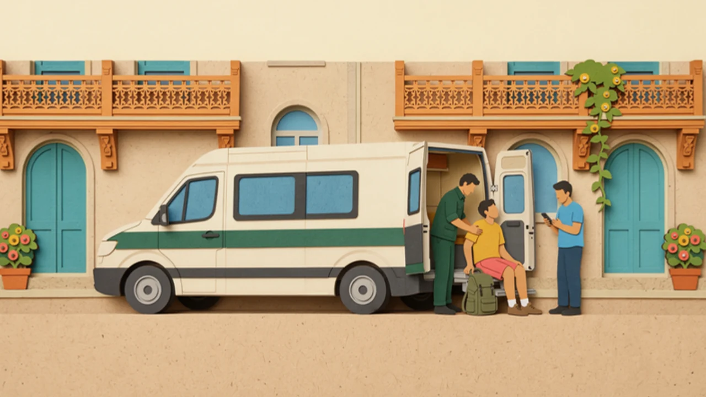

- Номер
- 112
- Языки
- 6, в т. ч. русский
- Без SIM
- можно
- Выезд скорой
- платит государство
- Покрытие полиса
- от 30 000 лари
Статья входит в путеводитель по Грузии.
112 в Грузии: единый номер
112 — единый номер всех экстренных служб страны: полиции, пожарных и спасателей, неотложной медицинской помощи. Оператор принимает информацию о происшествии и передаёт её нужной службе.
С 2012 года. Единый номер создан в 2012 году. Звонки принимают из любой точки Грузии круглые сутки — в Тбилиси, Батуми, в регионах. Так написано в вопросах и ответах на официальном сайте службы (на английском).
С какого телефона. Со стационарного и с мобильного. С мобильного можно звонить даже без SIM-карты. Код города набирать не нужно, отрицательный баланс тоже не помеха. Условие одно: телефон должен быть в зоне покрытия мобильного оператора.
Наш совет. Перед походом в горы узнайте, есть ли связь на маршруте, и не уходите туда, где её нет, без попутчика.
Как вызвать скорую или полицию: звонок на 112
Совет GOV.UK туристам: наберите 112 и попросите скорую. Пожарных и другие службы вызывают так же — оператор передаст вызов куда нужно.
Что сказать оператору
Сайт службы (на английском) просит назвать три вещи:
- Где — точное место происшествия.
- Что случилось — и какая служба нужна.
- Кто звонит — имя и фамилия.
Говорите чётко и не кладите трубку, пока оператор не закончит разговор. Каждый звонок записывается.
Наш совет. Сохраните в телефоне адрес жилья латиницей и ориентир рядом с ним. В стрессе адрес проще прочитать, чем вспомнить. Если вы не один, пусть звонит попутчик, а вы оставайтесь с пострадавшим.

На каком языке говорить
С оператором можно говорить по-русски. В разделе вопросов и ответов служба пишет, что операторы принимают звонки на шести языках: грузинском, английском, азербайджанском, армянском, турецком и русском.
Наш совет. Начинайте на том языке, которым владеете лучше всего. Адрес и названия улиц произносите медленно, по слогам.
![Снимок страницы вопросов и ответов 112.gov.ge на английском. Сверху строка «Снимок страницы 112.gov.ge · на английском» и наш заголовок «Операторы 112 говорят на шести языках, в том числе на русском». Вопрос «Can 112 call-taker handle calls in languages other than Georgian?», ответ выделен жёлтым: «Yes, 112 call-takers can handle calls in Georgian, English, Azerbaijani, Armenian, Turkish and Russian languages». Снизу строка «112.gov.ge · вопросы и ответы · снимок 17.11.2026, текст сверен 19.11.2026 · выделение наше»](../../assets/img/ambulance-georgia-ru/112-yazyki-mob.webp)
Приложение 112 Georgia
Приложение выручает, когда говорить нельзя или трудно. По странице приложения на официальном сайте (на английском), туристу пригодятся три функции:
- Звонок с координатами. Вы звоните оператору, а приложение одновременно отправляет ваши координаты. Нужен включённый GPS.
- Чат с оператором. Если позвонить не получается, ситуацию можно описать в переписке.
- Тревога SOS. Для случаев, когда сам звонок может создать опасность. Приложение отправляет координаты, и 112 высылает полицию.
Интерфейс есть на пяти языках: грузинском, английском, русском, армянском и азербайджанском. Правительство Канады в советах путешественникам добавляет, что через приложение можно связаться с экстренными службами на английском.
Наш совет. Установите приложение в первый же день, пока есть Wi-Fi и время разобраться в настройках. Сразу разрешите ему передавать координаты.
Что происходит после звонка
Оператор принимает вызов, а бригаду отправляет отдельный медицинский центр. С августа 2020 года это Центр координации чрезвычайных ситуаций и неотложной помощи при Минздраве Грузии. Так пишет отчёт MedCOI Агентства ЕС по вопросам убежища за 2025 год (на английском).
Сколько ждать. По данным 2021–2022 годов из того же отчёта, бригада приезжала в среднем за 30–40 минут. В 2022 году в стране работали 78 станций и 333 бригады.
Вне городов. Правительство Канады предупреждает: в сельские районы экстренные службы могут не добраться. О том, как вести себя в городе и на дорогах, — в статье «Безопасно ли в Грузии».
Наш совет. Пока ждёте, держите телефон включённым и под рукой. Попросите кого-то встретить бригаду на улице, а паспорт и номер полиса положите у двери.

Кто платит: скорая и больница
Выезд бригады скорой по вызову оплачивает государство — для любого человека на территории Грузии, туриста тоже. Госпитализацию и лечение в стационаре туристу государство не оплачивает.
Где это записано. В Постановлении Правительства Грузии №655 от 31 декабря 2025 года о программах здравоохранения на 2026 год, приложение 18.1 (текст на matsne.gov.ge, на грузинском).
Лечение. GOV.UK пишет британцам: соглашения о взаимной медпомощи с Грузией нет, за лечение платит сам путешественник или его страховщик. В Тбилиси медпомощь есть, но может быть дорогой, а за его пределами она ограничена. Если вас направили в клинику, британское правительство советует сразу сообщить об этом страховщику (раздел Health на gov.uk, на английском).
Полис для въезда. С 1 января 2026 года иностранцы обязаны въезжать в Грузию с полисом на лечение и несчастные случаи с покрытием не меньше 30 000 лари на весь срок. Это требование статьи 12 Закона Грузии о туризме и Постановления Правительства Грузии №602 от 26 декабря 2025 года. Подробнее — в разделе о полисе для въезда.
Клиники Тбилиси. Куда обращаться иностранцу в столице за неотложной помощью, разбирает статья в блоге 100doc.ge.
Наш совет. Сфотографируйте паспорт и первую страницу полиса и держите снимки в телефоне. Тогда в приёмном покое их не придётся искать.

Частые вопросы
Какой номер скорой помощи в Грузии?
Можно ли позвонить без SIM-карты?
Платит ли турист за выезд бригады?
Что делать, если говорить нельзя?
Источники
- Официальный сайт службы: вопросы и ответы — языки, звонок без SIM-карты (на английском) ↑
- Официальный сайт службы: когда звонить и что сказать оператору (на английском) ↑
- Официальный сайт службы: мобильное приложение (на английском) ↑
- Постановление Правительства Грузии №655 от 31 декабря 2025 года, приложение 18.1 (matsne.gov.ge) (на грузинском) ↑
- Постановление Правительства Грузии №602 от 26 декабря 2025 года (matsne.gov.ge) (на грузинском) ↑
- GOV.UK: Georgia — Health (на английском) ↑
- Правительство Канады: Georgia travel advice (на английском) ↑
- Агентство ЕС по вопросам убежища: отчёт MedCOI о здравоохранении Грузии, 2025 (данные за 2021–2022 годы) (на английском) ↑
Это справочная информация, а не медицинская консультация: решение о лечении принимает врач. При угрозе жизни сразу звоните 112. Проверено 19 ноября 2026 года.